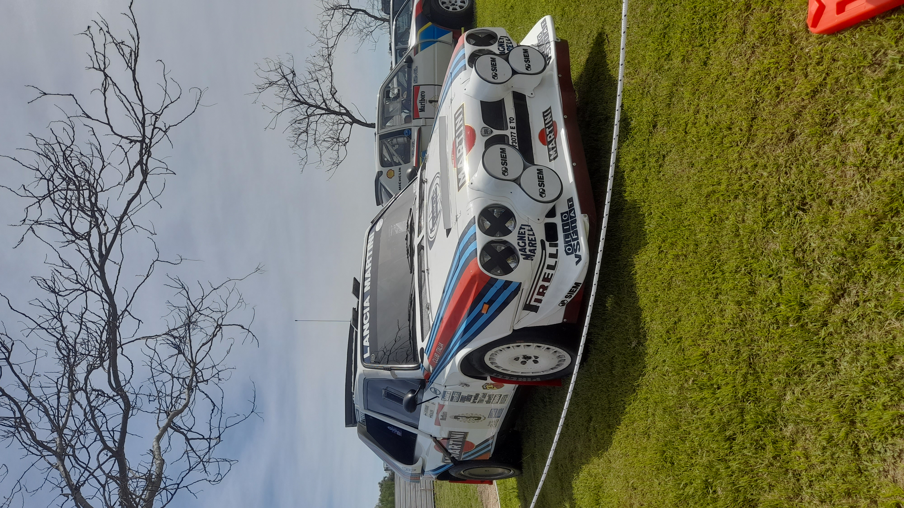
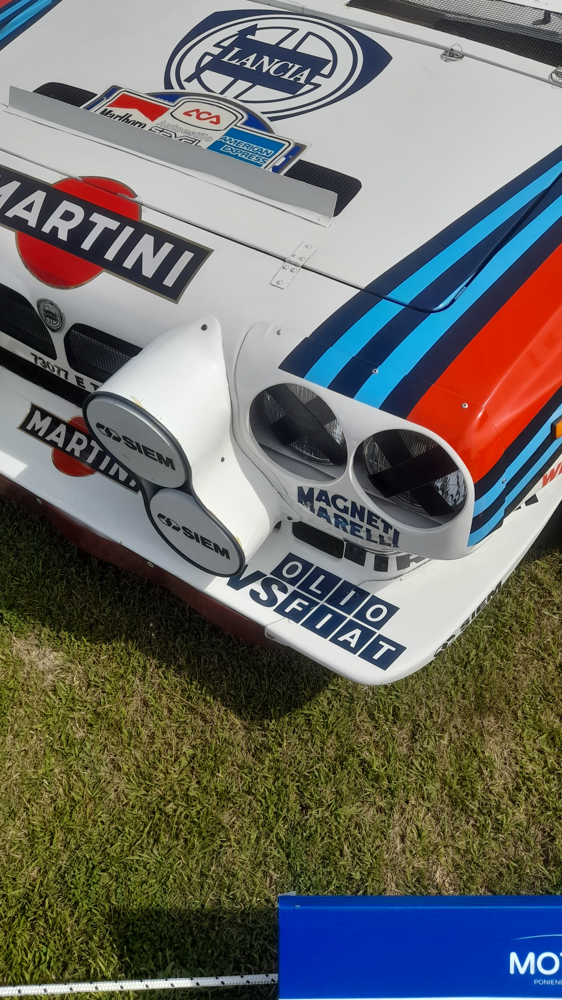
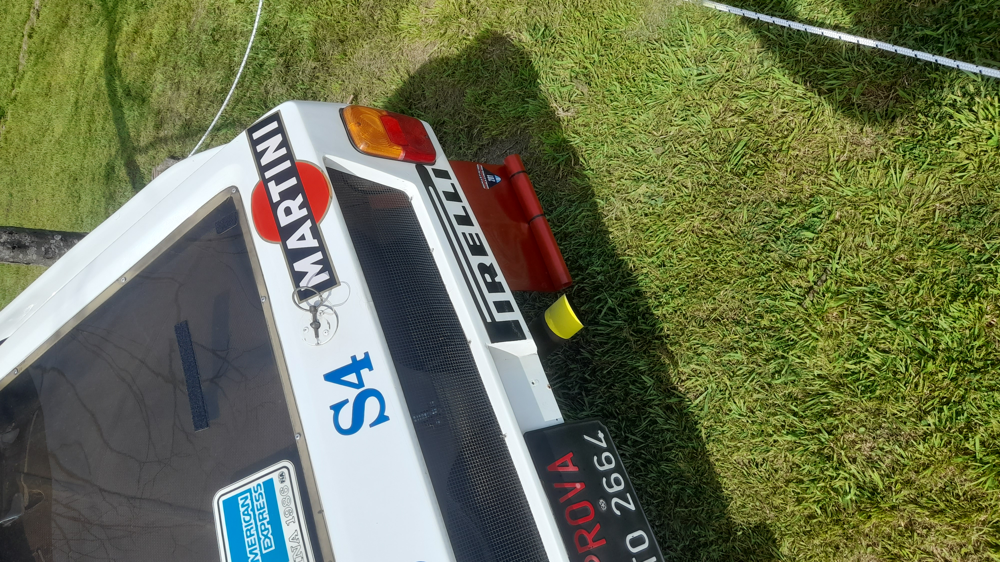
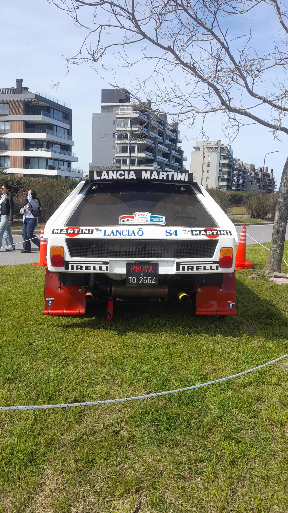
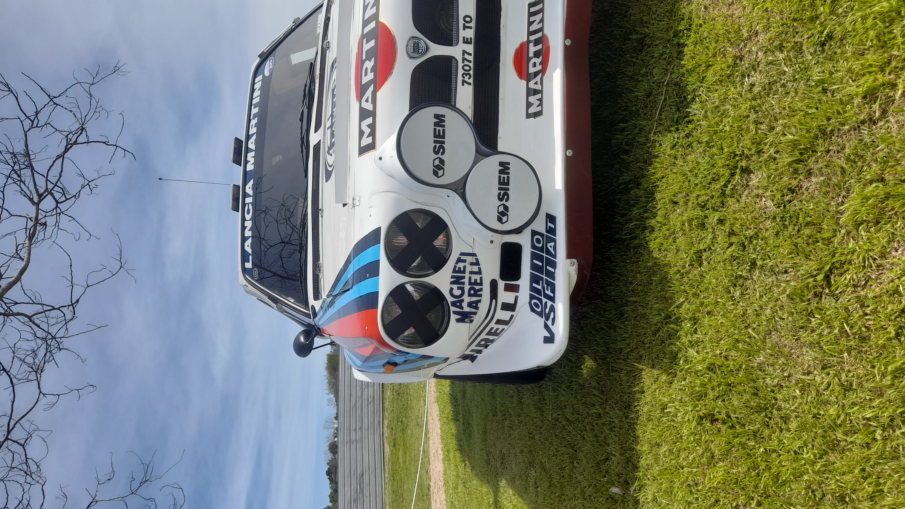
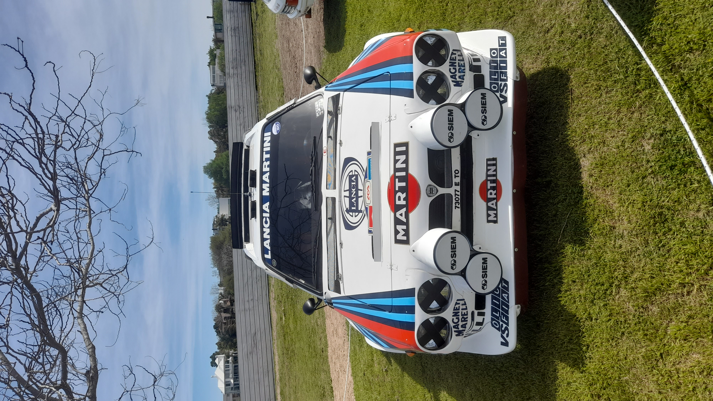
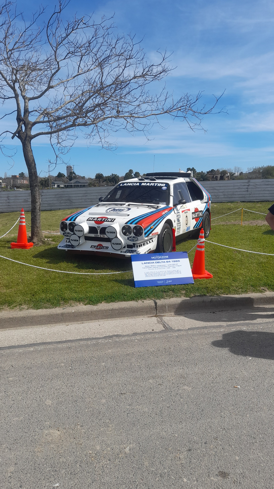
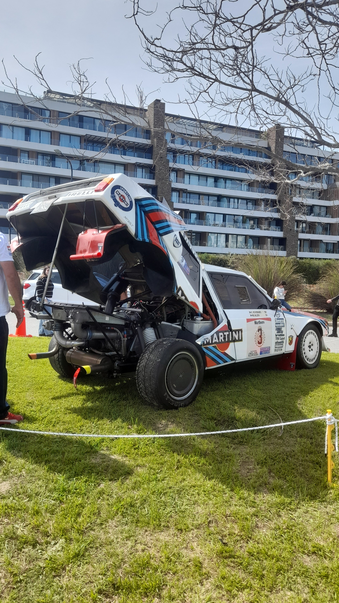
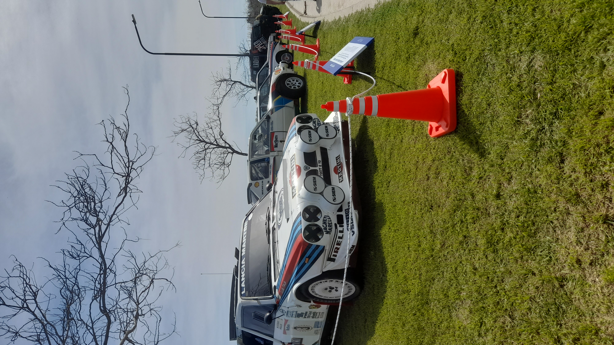

.png)
Auto especial
Lancia Delta S4
Historia
El Lancia Delta S4 nació como respuesta de Lancia a una nueva era del rally. A comienzos de los años 80, el Grupo B permitió a los fabricantes desarrollar autos prácticamente sin límites, y Lancia necesitaba un reemplazo para el 037, que empezaba a quedar en desventaja frente a los nuevos autos de tracción integral.
Lancia, junto con Abarth, desarrolló un auto que tenía muy poco que ver mecánicamente con el Delta de calle. El S4 utilizaba un chasis tubular, motor central longitudinal de cuatro cilindros y tracción integral. Pero probablemente su característica más llamativa era su sistema de inducción forzada: utilizaba un compresor volumétrico y un turbocompresor trabajando juntos. El compresor ayudaba a entregar respuesta a bajas revoluciones, mientras que el turbo permitía obtener una enorme potencia cuando el motor subía de vueltas.
Para poder competir en el Grupo B, Lancia tuvo que construir las unidades necesarias para su homologación de calle. Así nació el Delta S4 Stradale, una versión de carretera basada en el auto de competición, aunque bastante más civilizada.
El Delta S4 fue homologado por la FIA en noviembre de 1985 y debutó en el Campeonato Mundial de Rally en el Rally de Gran Bretaña de ese mismo año. Lancia tuvo un debut prácticamente perfecto: Henri Toivonen ganó el rally y Markku Alén terminó segundo, consiguiendo un doblete para la marca.
En 1986 el S4 se convirtió en uno de los principales protagonistas del campeonato. Toivonen consiguió una victoria en el Rally de Montecarlo y Lancia volvió a demostrar que tenía uno de los autos más rápidos de toda la categoría. Sin embargo, aquella temporada también marcaría el comienzo del final para el Grupo B.
En el Rally de Córcega de 1986, Henri Toivonen y su copiloto Sergio Cresto fallecieron en un accidente mientras competían con un Delta S4. Después de una temporada marcada por varios accidentes graves, la FIA decidió cancelar el Grupo B para 1987.
La desaparición del Grupo B puso un final prematuro a la carrera del Delta S4. Lancia abandonó aquel proyecto y pasó a competir con el Delta en Grupo A, comenzando una de las etapas más exitosas de la historia del rally. Aunque el S4 tuvo una vida competitiva muy corta, quedó como uno de los símbolos más extremos de aquella época y como uno de los últimos grandes exponentes del Grupo B.
Galería









- Marca: Lancia
- Modelo: Delta S4
- Año: 1985
Especificaciones
- Motor: cuatro cilindros en línea 1.8
- Potencia: 480-500 HP
- 0-100 km/h: 2,3 s
- Tracción: Integral
- sobrealimentación: Forzada, compresor volumétrico + turbocompresor
Valoración: 5/5
Mi encuentro con el auto
Lugar: Motor Zone
Fecha: 13/09/2025
Opinión personal:
Un auto unico en su especie, que me facina hace años, El hecho de que usara un sistema de doble sobrealimentación (twin-charging) que combinaba un supercargador Volumex y un turbo KKK, me volaba la cabeza, simplemente tenia potencia siempre que lo necesitaras, igualmente este auto es un trago semi amargo, ya que no destaco mucho en la competicion por su tardia incorporacion a la competicion